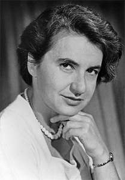

Rosalind Elsie Franklin (25 July 1920 – 16 April 1958)
was
an English chemist and X- ray crystallographer who made contributions to
the understanding of the molecular structures of DNA (deoxyribonucleic
acid), RNA (ribonucleic acid), viruses, coal, and graphite. Although her
works on coal and viruses were appreciated in her lifetime, her
contributions to the discovery of the structure of DNA were largely
recognised posthumously.